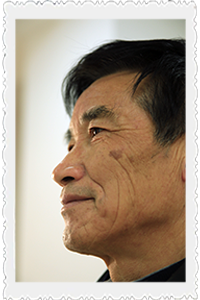

钟孝林高中毕业那年卫生站去学校招人，他参加了培训，“当时只想着有份工作”，所谓培训其实就是大家在卫生站里跟着前辈乡村医生学习。人民公社大办合作医疗的年代，每个生产队里都要配两三名医生，小钟就填了这个缺。

湿润的江南，常常阴雨连夜，水汽浸入泥巴，混杂着野草汁液迸溅的芬芳，钟孝林全凭自己一双脚，踩过泥泞的小路，走过一个个蜿蜒的田坎，把安全和踏实带到一个个无能为力的家庭中。

钟医生的出走
1982年田土下放，合作医疗也随之解散，随着包产到户，各卫生站也开始自负盈亏，没有了政府的统一管理和过问，乡村医生的收益难以保证。
那年钟孝林的儿子面临升学，高中的开销压力不小，他在父亲的角色中总觉得亏欠孩子许多，连日连夜的工作使他没有时间过问孩子的学习和生活。
在工作和生活的冲突中，他选择南下深圳打工，为了孩子和家人更好的生活，先去赚些钱。其实那几年里有很多乡村医生“出走”，沙头村当地的政府决定自建医院和卫生院，解决乡村医生“单干”的问题。
千呼万唤，钟孝林回来了。
“当时领导让我自己开工资，不想让我委屈。唉，他们的困难我也都知道。”
他开不了这个口，只说跟大家的薪资一样就行，凡事按规定来。1985年他从深圳回来到现在，在卫生院又干了三十几年，当年的小钟也熬成了老钟。他起草的一系列规范、守则，修修改改，一直沿用至今
返聘
钟医生退休后被返聘，仍旧在医院里，做些简单的接诊
沙头村社区医院
医院的领导邀请钟医生回来重建医院，起草了医院的规范条例，薪资可以自己开价。钟医生凭借多年的从医经验，为医院订制了一整套完整规范的章程，一直沿用至今。而钟医生的薪资，还是和普通的医生一样。
诊疗
每天的病人不多，吊水的病人来了，坐在宽敞的治疗室里，钟医生就坐在一旁同他们聊聊天
诊疗室内
钟医生一直坚持着自己的原则，“做基层的医生就是要把病看出来，你不可能治好每一个人，但你要给出正确的建议，能接手的就治，接手不了的就要让他们赶紧去大医院里检查。”
遗忘
钟医生拿出自己的赤脚医生证：“我们以前也有证的。”而现在的他们却在被遗忘
现实的反差
农村合作社消失后的几年，他们的保障也消失了几年，到新农合后，补算工龄，补交保险，加上政府补贴，这才有了现在的保障。 “我们乡村医生，在那个年代来说，比起正规编制的医生，贡献真不算小，什么都自己做自己来。但后来给予我们的待遇，是说实话，有很大落差的。”
中国传媒大学 电视学院学生新媒体类毕业设计作品
融媒体作品 我是乡村医生